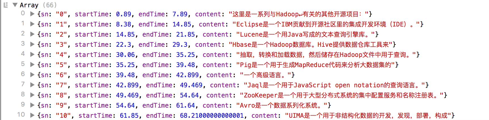

2016-10-08 JS 解析 SRT 格式的字幕 FE 把 SRT 格式的字幕文件解析为字幕的对象数组，格式为: 1234[ {sn: "0", startTime: 0.89, endTime: 7.89, content: "这里是一系列与Hadoop↵有关的其他开源项目"}, {sn: "1", startTime: 8.38, endTime: 14.85, content: "Eclipse是一个IBM贡献到开源社区里的集成开发环境（IDE）"}] 输出效果:  12345678910111213141516171819202122232425262728293031323334353637383940414243444546474849505152535455565758596061626364656667686970717273747576777879808182838485868788899091<!DOCTYPE html><html><head> <meta charset="utf-8"> <title>解析 SRT 格式的字幕</title> <script src="jquery.min.js" charset="utf-8"></script></head><body> <script> // SRT 格式的字幕文件的 URL var srtSubtitleUrl = 'hadoop.srt'; // 字幕对象的数组 window.subtitles = []; // {sn: 1, startTime: 0, endTime: 100, content: '这里是一系列与Hadoop'}, 时间单位是秒 // 加载字幕 $.get(srtSubtitleUrl, function(srt) { window.subtitles = parseSrtSubtitles(srt); console.log(window.subtitles); }); /** * 把 SRT 格式的字幕文件解析为字幕的对象数组，格式为: * [ * {sn: "0", startTime: 0.89, endTime: 7.89, content: "这里是一系列与Hadoop↵有关的其他开源项目："}, * {sn: "1", startTime: 8.38, endTime: 14.85, content: "Eclipse是一个IBM贡献到开源社区里的集成开发环境（IDE）。"} * ] * * @param string srt 字幕文件的内容 * @return 字幕的对象数组 */ function parseSrtSubtitles(srt) { var subtitles = []; var textSubtitles = srt.split('\n\n'); // 每条字幕的信息，包含了序号，时间，字幕内容 for (var i = 0; i < textSubtitles.length; ++i) { var textSubtitle = textSubtitles[i].split('\n'); if (textSubtitle.length >= 2) { var sn = textSubtitle[0]; // 字幕的序号 var startTime = toSeconds($.trim(textSubtitle[1].split(' --> ')[0])); // 字幕的开始时间 var endTime = toSeconds($.trim(textSubtitle[1].split(' --> ')[1])); // 字幕的结束时间 var content = textSubtitle[2]; // 字幕的内容 // 字幕可能有多行 if (textSubtitle.length > 2) { for (var j = 3; j < textSubtitle.length; j++) { content += '\n' + textSubtitle[j]; } } // 字幕对象 var subtitle = { sn: sn, startTime: startTime, endTime: endTime, content: content }; subtitles.push(subtitle); } } return subtitles; } /** * 把字符串格式的字幕时间转换为浮点数 * * @param string t 字符串格式的时间 * @return 浮点数格式的时间 */ function toSeconds(t) { var s = 0.0; if (t) { var p = t.split(':'); for (i = 0; i < p.length; i++) { s = s * 60 + parseFloat(p[i].replace(',', '.')); } } return s; } </script></body></html> < jQuery 的 REST 插件 SpringMVC 获取 Request 和 Response >